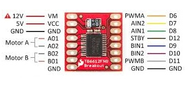

Condicionament de la sortida#
Pàgina en desenvolupament
Encara estem treballant en aquest document.
Esperem oferir-vos properament el seu contingut.
Disculpeu les molèsties.
Generalment hem de preparar la sortida per poder satisfer les necessitats de l’actuador que volem controlar. Si volem, per exemple, engegar i aturar un motor DC, que típicament consumeix de l’ordre de 1 A, díficilment ho podrem aconseguir amb la sortida d’un microcontrolador, que està limitada a 20 mA.
Veiem alguns exemples:
Sortida transistoritzada amb col·lector obert#
Podem utilitzar un transistor en tall / saturació. Típicament es posa una resistència de \(1 k\Omega\) en sèrie a la base per limitar el corrent.
No és un mòdul fàcil de trobar comercialitzat, però el podem fer nosaltres amb una placa de prototips de tires i un transistor BC337, que ens permet corrents fins a 800 mA:
Cara components |
Cara soldadures |
|---|---|
Una avantatge de fer servir transistors és que podem regular la potència de la sortida amb modulació de pulsos (PWM), ja que la conmutació del transistor és molt ràpida i no existeixen elements mecànics, a diferència dels relès que no ho permeten:
Show code cell source
%%html
<iframe src="https://www.falstad.com/circuit/circuitjs.html?ctz=CQAgjCAMB0l3BWK0CcAOFYAskUDYBmArBBAdgTxATWusmoFMBaMMAKABcQAmS3-gTy0+VBhGZZUKGbMxoCc6rDmywCeTx4sU4OCAAmjAGYBDAK4AbTuwBO4LFgFVRzqHrh2QQ2mgY-eHHcCTwB3b2FeMh4I2gIEGMh2cID4mOwnNKh2ADcHTIT8tyckMHg6BkroNDxkkCwwKizUwqS8rHxeNFoOl0haSvqGJEGYBDqAv3rOqaTw3pAphZ5+7PnOnm7ppta6hayGncT2AHtweuDhPCoR6AhxU94LsnB4sAoK2BHzmAIwPnYBFoSAAYhBvmUGKwQAARcycACeAB0AM4AYQRAGNLIx2EA" width="800" height="600"></iframe>
El que si que trobarem comercialitzats són mòduls amb transistors MOSFET com el IRF520 que permeten treballar amb càrregues fins al 5A. A partir de 1A necessitarem posar un radiador.
També podríem haver utilitzat un transistor Darlington com el BCX38B. En aquest cas podem pujar la resistència de base als \(10 k\Omega\), ja que amb una \(\beta \sim 4000\) no necessitem gaire corrent a la base. Però com aconseguim la mateixa intensitat màxima a la sortida que el BC337 no és un component massa utilitzat.
Els transistors Darlington integren en un mateix encapsulat dos transistors: el primer ataca la base del segon. El guany és el producte dels guanys dels dos transistors, \(\beta = \beta_1 \ \beta_2\), arribant fàcilment a valors de milers:
Show code cell source
%%html
<iframe src="https://www.falstad.com/circuit/circuitjs.html?ctz=CQAgDOB0YzCsICMZICYaoOyYMxgByoBsAnCZiHEZZRHAKYC0iiAUAC4g5H4ir68ALDD4DwSEI0GQyssoJyCeiIoMkpUOTKlRw4OHHBK6wmKkhEATegDMAhgFcANu1YAnPgVG88a-rwhkWFYAdy4wNRZUEEFBXijwdxi4pERo2N4dNTpIIlDkn3QCrnxIjhiRX2KqwMlpTCIsTFiwEnwzInMNLR09UsbG1BJzIJBre2dXMOEILHSRLMTphdQ1DL5VpeLF9f8t7kyxKr22ACVwyLS+YVToiAgbhHuoOFYAc2rS4pnxMFYAGU8h3iDW8vxA9icAGd6DQ-kA" width="800" height="600"></iframe>
En la pràctica el que s’utilitza molt són els xips amb diversos transistors Darlington integrats, com el ULN2003 que en porta 7 amb diodes de protecció per a càrregues inductives, i que el podem trobar comercialitzat amb diferents mòduls, fins i tot amb el connector del motor pas a pas 28BYJ-48 amb el que s’utilitza habitualment:
Element Darlington |
pin-out |
mòdul 7 sortides |
mòdul per 28BYJ-48 |
|---|---|---|---|
|

Relès#
Amb relès no podem treballar amb PWM, però ens permeten controlar dispositius amb consums importants (10 A), altres tensios de treball o que funcionen a AC. Es comercialitzen mòduls molt econòmics , que incorporen transistors per excitar-los (els relès consumeixen típicament 200 mA) i díodes de protecció (recordeu la llei de Lenz: quan s’obre la bobina del relè es genera una f.e.m. de signe contari que podria fer malbé els nostres components de control).
Podem millorar la protecció del nostre sistema de control utilitzan un mòdul amb optoacopladors.
Mòdul de relè |
Esquema |
Mòdul de 4 relès optoacoplats |
|---|---|---|
Pont H#
Quan volem treballar amb els dos sentits de gir d’un motor necessitem un circuit més sofisticat que ens permeti donar i rebre tensió per les dues bandes. Aquest circuit és el pont H que podem veure al simulador:
Show code cell source
%%html
<iframe src="https://www.falstad.com/circuit/circuitjs.html?ctz=CQAgDOB0YzCsICMBOSAOAbAdgCwCYsBmHRORHZNQkLZJCfEOAUwFpFEAoAFxDzgxJkeEITwQUIiSFYJWYSHhy4whNIkKI8GMMjXVEMEABNmAMwCGAVwA23HnwF80aUeOeuI7cDIVKVahpaOnpU9BCmlrb2AO5uEOKuYgk4EGCcccl8qfF8WFIZuYRgOEVwBZnuWklVWILpAEq51bloaT45CO0KcIVZShCEGK4D4JwA5mUiWWqlaYX8gqOLHmNxK5KOSznpADJb2RJ1hz4QljYAzsxMY7wCEsIgFIKb0rK+isqpgZramGjlcImczWOyFZ6iEpPZCCQiA9JxCGjJH5W5MHSrJEuHzeLx+L6qdS-YbDQGGCIg6J9Kp4JLDJC0tbQl6MiGIY4I5l8MCuJE7cE4EY5PnzRGC0SAiFwgr7e4nDA5Ubtc5XG6cuWbOVKwpazoY2meTgkBBDIUMcVKqAIRBILqQUhQWAwKTQa1jYyiemjU0MkbAqJgj0+6Wes18f2g+wenDikMxsMiSKRzjRi3C8UtROUsGZekteO+pkF-Mwwuc4OAmbwvr0uOx6sAe2yIAVHV0dDtYH4PhESlEnCAA" width="800" height="600"></iframe>
Trobarem diferents mòduls comercialitzats [Wor22]. Actualment els més utilitzats són el L9110 i el TB6612FNG, molt més eficaços que els antics L293D o L298N [Wor19]. Tots aquests mòduls porten els díodes de protecció en anti-paral·lel (el L298N no els porta, al mòdul els posen externament).
L9110 |
TB6612FNG |
L298D |
|---|---|---|
 |